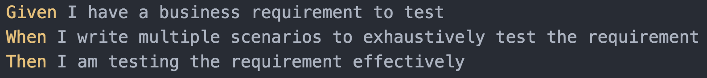
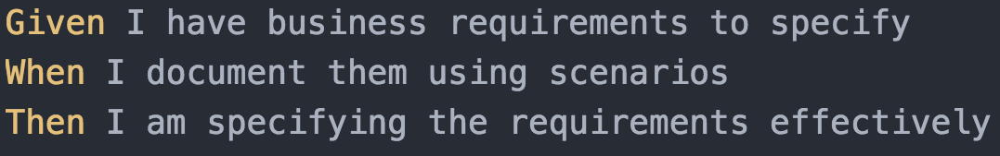
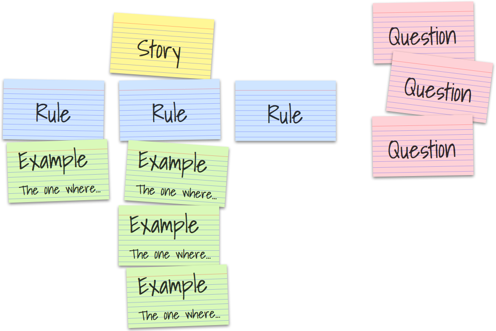
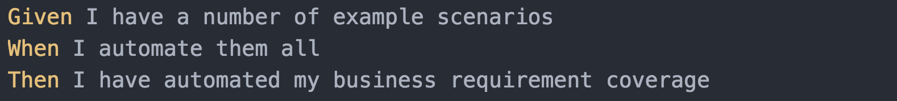
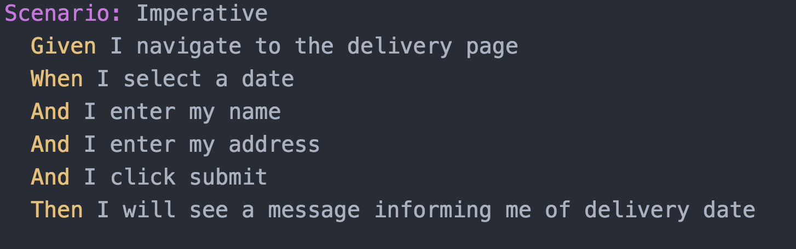
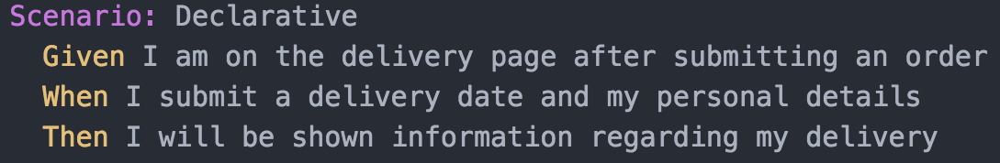

The deadly sins of BDD scenarios - Created by Mark Winteringham / @2bittester © 2017
The deadly sins of
BDD scenarios

Mark Winteringham
2bittester

mwtestconsultancy.co.uk

@2bittester

lnked.in/markwinteringham


Sin 1
OR
Using scenarios as test cases

http://theverybesttop10.com/pimp-my-ride-fails/
https://sullivanstory.files.wordpress.com/2013/10/image-axd.jpeg
How to atone?
- Stop using scenarios as test scripts
- Start getting the team involved in developing scenarios
- Be wary of tools
Sin 2
OR
Documenting acceptance criteria as scenarios
https://www.flickr.com/photos/dalbera/3600301569/
'We need to create a new scenario for this requirement'
Scope creep!
How to atone?
https://cucumber.io/blog/2015/12/08/example-mapping-introduction
Sin 3
OR
Automated scenarios as acceptance tests
equals
Awesome automation
Imperative
Declarative
"You can't specify love"
http://uk.businessinsider.com/programmer-automates-his-job-2015-11
Illusions of coverage
Regression Testing, the F.A.R.T Model - https://www.youtube.com/watch?v=P2PUXqasvGI
Regression checking antipatterns
How to atone?
- Decouple your automation strategy from your scenarios
- Identify risks first, tools second
- Put the human back in the centre of your automation
Let's recap
We help deliver what the business wants as a team by using scenarios to enable discussion and collaboration not by:
- Using scenarios/examples as test scripts
- Using scenarios as A/Cs
- Basing your automation on scenarios alone
Thank you
mwtestconsultancy.co.uk
@2bittester
lnked.in/markwinteringham